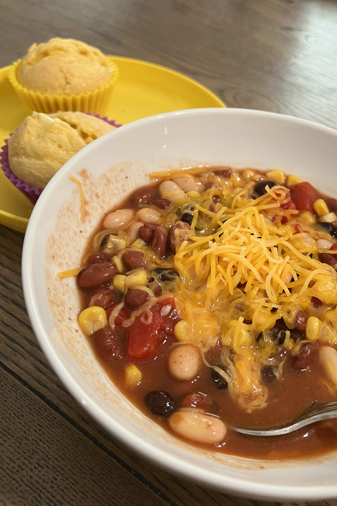

Famous Chili
This chili has evolved with me over the years. I started making it when
I was vegan - I'm not anymore but I still like to eat it that way
sometimes. You can add ground turkey, sour cream or cheese. Whatever you
want! That's the beauty of chili. It warms your soul too.

INGREDIENTS
Cans
- 2 cans chili beans with sauce
- 1 can diced tomatoes with sauce
- 1 can whole kernal corn strained
- 1 can black beans rinsed and strained
- 1 can navy beans rinsed and strained
Spices and More
- 1/4 teaspoon paprika
- 1/2 teaspoon onion powder
- 1/2 teaspoon garlic powder
- 1/2 teaspoon red pepper powder
- 1 teaspoon chili powder
- 1 TABLESPOON salt
- 1 TABLESPOON cornstarch - sifted
- 2 TABLESPOON brown sugar
Optional
- cooked ground meat
- sour cream
- shredded cheddar cheese
- corn bread muffins
- corn chips
INSTRUCTIONS
-
These instructions are very easy - just combine all ingredients and
cook in a crockpot for on high for 2 hours. If you're adding ground
meat such as beef, turkey or chicken, brown the meat with some spices
above and add to your chili.